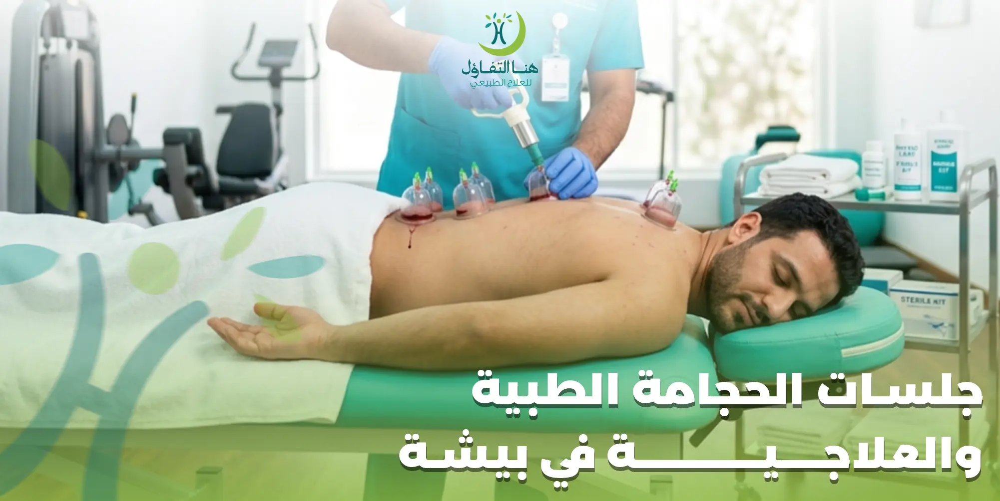

إذا كنت تبحث عن جلسات الحجامة الطبية في بيشة بإشراف مختصين وضمن بيئة صحية آمنة، فإن مركز هنا التفاؤل للعلاج الطبيعي يقدم خدمات الحجامة وفق معايير النظافة والسلامة، مع تقييم الحالة قبل الجلسة واختيار نوع الحجامة المناسب وفق احتياجات كل شخص.
تُستخدم الحجامة منذ سنوات طويلة كأحد الأساليب العلاجية التكميلية، ويلجأ إليها الكثير من الأشخاص للمساعدة في تخفيف بعض الآلام العضلية والمفصلية وتحسين الشعور بالراحة، كما يفضلها بعض الرياضيين ضمن برامج الاستشفاء بعد المجهود البدني، وذلك بعد تقييم الحالة والتأكد من ملاءمة هذا الإجراء.
في مركز هنا التفاؤل نحرص على تقديم جلسات الحجامة باستخدام أدوات معقمة للاستخدام الواحد، مع الالتزام بالإجراءات الصحية وشرح خطوات الجلسة للمراجع قبل البدء بها.
ما هي الحجامة الطبية؟
الحجامة الطبية هي إجراء علاجي تكميلي يعتمد على استخدام كؤوس مخصصة توضع على مناطق معينة من الجسم لتوليد ضغط سلبي (شفط)، ويختلف أسلوب تطبيقها حسب نوع الحجامة والحالة التي يتم تقييمها من قبل المختص.
ولا يتم اختيار نوع الحجامة بشكل عشوائي، بل يعتمد على عدة عوامل منها:
- سبب زيارة المراجع.
- التاريخ الصحي.
- العمر.
- الحالة العامة.
- وجود أمراض مزمنة أو أدوية معينة.
- تقييم المختص قبل الجلسة.
ولهذا يبدأ كل برنامج في مركز هنا التفاؤل بتقييم أولي يساعد على تحديد الطريقة الأنسب لكل حالة.
لماذا يختار الكثيرون جلسات الحجامة؟
يهتم العديد من الأشخاص بالحجامة كجزء من برنامج للعناية بالصحة أو كإجراء تكميلي ضمن خطة علاجية يحددها المختص، خاصة لمن يعانون من إجهاد عضلي أو يرغبون في تحسين شعورهم بالراحة بعد النشاط البدني.
ومن الأسباب التي تدفع الكثيرين إلى إجراء جلسات الحجامة:
- الرغبة في تخفيف بعض الآلام العضلية.
- الشعور بالإجهاد الناتج عن العمل أو الرياضة.
- الاستفادة من أسلوب علاجي تكميلي تحت إشراف مختص.
- الاهتمام بالصحة العامة.
- اتباع السنة النبوية بالنسبة لمن يرغب في الحجامة النبوية.
- إجراء جلسات دورية وفق تقييم المختص.
فوائد الحجامة الطبية
تختلف الفوائد المتوقعة من شخص لآخر، كما تعتمد على طبيعة الحالة ونوع الحجامة المستخدم، لذلك يتم تقييم كل مراجع بشكل منفصل قبل البدء في الجلسة.
يؤكد فريق مركز هنا التفاؤل أن الحجامة لا تُغني عن التشخيص الطبي أو العلاج الذي يوصي به الطبيب عند الحاجة، وإنما يتم تقديمها بعد تقييم الحالة وبيان مدى ملاءمتها.
الحالات التي قد تستفيد من جلسات الحجامة
بعد التقييم الطبي، قد يرى المختص أن الحجامة مناسبة كإجراء تكميلي لبعض الحالات، مثل:
- بعض حالات آلام الظهر.
- بعض حالات آلام الرقبة.
- الشد العضلي.
- إجهاد العضلات بعد النشاط البدني.
- بعض آلام الكتف.
- بعض آلام المفاصل.
- الرياضيون ضمن برامج الاستشفاء.
- الأشخاص الراغبون في الحجامة النبوية وفق الضوابط الصحية.
ويتم تحديد مدى مناسبة الحجامة لكل حالة بصورة فردية، وقد لا تكون الخيار المناسب لجميع الأشخاص.
أنواع الحجامة في مركز هنا التفاؤل
يوفر مركز هنا التفاؤل للعلاج الطبيعي في بيشة عدة أنواع من الحجامة، ويتم اختيار النوع المناسب بعد تقييم الحالة، وتشمل:
الحجامة النبوية
تطبق وفق السنة النبوية مع الالتزام بمعايير النظافة والسلامة.
الحجامة الرطبة
أكثر الأنواع شيوعًا، تتم باستخدام أدوات معقمة للاستخدام الواحد.
الحجامة الجافة
تعتمد على الشفط دون تشريط، تستخدم في حالات معينة.
الحجامة المتزحلقة
تحريك الكؤوس على الجلد لتغطية مساحة أكبر من العضلات.
الحجامة النبوية
تعد الحجامة النبوية من أكثر أنواع الحجامة طلبًا لدى الكثير من الأشخاص الذين يرغبون في تطبيقها اقتداءً بالسنة النبوية، ويتم إجراؤها وفق أسس صحية مع الالتزام الكامل بإجراءات التعقيم والسلامة.
وفي مركز هنا التفاؤل يتم إجراء الحجامة النبوية بعد تقييم الحالة الصحية، والتأكد من عدم وجود موانع تمنع إجراء الجلسة، مع شرح التعليمات الواجب اتباعها قبل وبعد الحجامة.
الحجامة الرطبة في بيشة
تعد الحجامة الرطبة من أكثر أنواع الحجامة شيوعًا، ويتم إجراؤها بواسطة مختص مدرب مع الالتزام بإجراءات التعقيم واستخدام أدوات معقمة للاستخدام الواحد، بما يضمن تطبيق الجلسة وفق أعلى معايير السلامة.
وتتميز جلسات الحجامة الرطبة في المركز بـ:
- تقييم الحالة قبل البدء.
- استخدام أدوات معقمة.
- الالتزام بإجراءات مكافحة العدوى.
- اختيار مواضع الحجامة وفق تقييم المختص.
- تقديم تعليمات قبل وبعد الجلسة.
- متابعة المراجع بعد انتهاء الجلسة عند الحاجة.
الحجامة الجافة
الحجامة الجافة هي أحد أنواع الحجامة التي تعتمد على استخدام كؤوس خاصة لإحداث ضغط سلبي على الجلد دون إجراء تشريط، ويستخدمها المختص في بعض الحالات وفق تقييم الحالة الصحية.
وقد تُستخدم الحجامة الجافة كإجراء تكميلي للمساعدة في تخفيف بعض حالات الشد العضلي، ودعم برامج الاستشفاء بعد النشاط البدني، أو تحسين مرونة بعض الأنسجة الرخوة.
الحجامة المتزحلقة
تعتبر الحجامة المتزحلقة من التقنيات التي يتم فيها تحريك الكؤوس على الجلد بعد استخدام مادة مناسبة، بهدف تغطية مساحة أكبر من العضلات والأنسجة.
ويركز هذا النوع من الحجامة على استهداف مناطق الشد العضلي، وتغطية مساحة أكبر من العضلات، ودمج فوائد التدليك مع تقنية الشفط.
الحجامة لآلام الظهر
يبحث الكثير من الأشخاص عن الحجامة لآلام الظهر في بيشة، خاصة في حالات الإجهاد العضلي الناتج عن الجلوس لفترات طويلة أو طبيعة العمل أو المجهود البدني.
بعد تقييم الحالة، قد يرى المختص أن الحجامة يمكن أن تكون جزءًا من خطة علاجية تكاملية للمساعدة في تخفيف بعض آلام العضلات، إلى جانب العلاج الطبيعي أو التمارين العلاجية عند الحاجة.
الحجامة لآلام الرقبة والكتفين
تعد آلام الرقبة والكتفين من المشكلات الشائعة لدى الموظفين والأشخاص الذين يقضون ساعات طويلة أمام أجهزة الكمبيوتر أو الهواتف الذكية، كما قد تظهر نتيجة الإجهاد العضلي أو وضعيات الجلوس غير الصحيحة.
وفي بعض الحالات، وبعد التقييم، يمكن أن تكون الحجامة جزءًا من خطة علاجية تهدف إلى المساعدة في تخفيف الشد العضلي وتحسين الشعور بالراحة.
الحجامة للرياضيين
يلجأ بعض الرياضيين إلى الحجامة ضمن برامج الاستشفاء بعد التدريبات أو المنافسات، ويكون الهدف منها أن تكون جزءًا من خطة متكاملة يشرف عليها المختص، تشمل أيضًا التمارين العلاجية والعناية بالعضلات.
وفي مركز هنا التفاؤل يتم تقييم كل رياضي بصورة فردية قبل إجراء الجلسة، مع مراعاة نوع الرياضة وشدة التدريب والحالة الصحية.
كيف تتم جلسة الحجامة؟
يحرص فريق مركز هنا التفاؤل للعلاج الطبيعي في بيشة على أن تتم الجلسة وفق خطوات منظمة لضمان راحة المراجع والالتزام بمعايير السلامة.
استقبال المراجع
يتم التعرف على الحالة الصحية والأعراض والتاريخ المرضي، مع مناقشة الهدف من الجلسة والإجابة عن استفسارات المراجع.
التقييم
يقوم المختص بتقييم الحالة والتأكد من عدم وجود موانع صحية لإجراء الحجامة، ثم يحدد النوع المناسب ومواضع التطبيق.
تجهيز الأدوات
يتم استخدام أدوات معقمة وذات استخدام واحد عند الحاجة، مع الالتزام الكامل بإجراءات مكافحة العدوى.
إجراء الجلسة
يتم تطبيق الحجامة بالطريقة المناسبة وفق نوعها، مع متابعة المراجع طوال الجلسة لضمان راحته.
التعليمات بعد الجلسة
بعد انتهاء الجلسة يحصل المراجع على مجموعة من الإرشادات التي تساعده على الاستفادة من الجلسة، مع توضيح الحالات التي تستدعي التواصل مع المختص إذا لزم الأمر.
تعليمات قبل جلسة الحجامة
للمساعدة على إجراء الجلسة بأفضل صورة، قد يوصي المختص ببعض التعليمات مثل:
- الحضور في الموعد المحدد.
- إبلاغ المختص بالأدوية المستخدمة.
- إبلاغ المختص بأي أمراض مزمنة أو حساسية.
- ارتداء ملابس مريحة.
- الالتزام بأي تعليمات خاصة يقدمها المختص قبل الجلسة.
تعليمات بعد جلسة الحجامة
بعد الانتهاء من الجلسة، يقدم المختص مجموعة من الإرشادات التي قد تساعد على الشعور بالراحة خلال الساعات التالية، مثل:
- شرب كمية كافية من الماء.
- تجنب المجهود البدني الشديد في اليوم نفسه إذا أوصى المختص بذلك.
- المحافظة على نظافة مواضع الحجامة.
- الالتزام بالتعليمات الخاصة بكل حالة.
- التواصل مع المركز عند وجود أي استفسار.
من الأشخاص الذين قد لا تكون الحجامة مناسبة لهم؟
على الرغم من أن الحجامة تُستخدم كإجراء علاجي تكميلي لدى كثير من الأشخاص، إلا أنها لا تناسب جميع الحالات، لذلك يبدأ فريق مركز هنا التفاؤل للعلاج الطبيعي في بيشة دائمًا بتقييم الحالة الصحية قبل تحديد إمكانية إجراء الجلسة.
وقد لا تكون الحجامة مناسبة لبعض الأشخاص، مثل:
- من يعانون من اضطرابات نزيف الدم.
- الأشخاص الذين يتناولون بعض مميعات الدم، وفق تقييم الطبيب والمختص.
- من لديهم جروح أو التهابات جلدية في موضع الحجامة.
- بعض الحالات الصحية التي يرى المختص أنها تحتاج إلى تأجيل الجلسة أو اختيار علاج آخر.
- الحالات التي تستدعي تقييمًا طبيًا قبل إجراء الحجامة.
ولهذا نحرص على أخذ التاريخ المرضي للمراجع والإجابة عن جميع الأسئلة قبل بدء الجلسة، لضمان تقديم الخدمة بأعلى درجات الأمان.
هل جلسات الحجامة مؤلمة؟
من أكثر الأسئلة التي تصلنا في مركز هنا التفاؤل هو: هل الحجامة مؤلمة؟
تختلف التجربة من شخص لآخر، لكن معظم المراجعين يصفون الإحساس بأنه بسيط ومؤقت، ويعتمد ذلك على نوع الحجامة، وموضع تطبيقها، وطبيعة الحالة، ودرجة تحمل الشخص.
ويحرص المختص على شرح جميع خطوات الجلسة للمراجع قبل البدء، مع تطبيقها بطريقة مريحة وآمنة قدر الإمكان.
كم تستغرق جلسة الحجامة وكم عددها؟
تختلف مدة الجلسة حسب نوع الحجامة وعدد المواضع التي سيتم العمل عليها، إلا أن أغلب الجلسات تستغرق ما بين 20 إلى 45 دقيقة تقريبًا، ويحدد المختص المدة المناسبة بعد تقييم الحالة.
وتشمل هذه المدة:
- • التقييم الأولي.
- • تجهيز الأدوات.
- • تنفيذ الجلسة.
- • تقديم التعليمات بعد الانتهاء.
أما بالنسبة لعدد الجلسات، فلا يوجد عدد ثابت يناسب جميع الأشخاص، إذ يعتمد ذلك على الهدف من الجلسة، وطبيعة الحالة، واستجابة الجسم، وتقييم المختص.
لماذا تختار مركز هنا التفاؤل لجلسات الحجامة في بيشة؟
عند البحث عن أفضل مركز حجامة في بيشة، فإن جودة الخدمة، وخبرة المختص، ومعايير السلامة، تعتبر من أهم العوامل التي يجب الاهتمام بها.
في مركز هنا التفاؤل للعلاج الطبيعي نحرص على تقديم جلسات الحجامة وفق إجراءات صحية دقيقة، مع الاهتمام براحة المراجع منذ لحظة دخوله وحتى انتهاء الجلسة.
تقييم شامل قبل الجلسة
تقييم دقيق للحالة واختيار النوع المناسب.
التزام بمعايير التعقيم
استخدام أدوات معقمة للاستخدام الواحد.
مختصون مؤهلون
فريق مدرب على أنواع الحجامة المختلفة.
شرح ومتابعة
شرح الخطوات وتعليمات ما بعد الجلسة.
الأسئلة الشائعة حول جلسات الحجامة الطبية في بيشة
احجز جلسة الحجامة في مركز هنا التفاؤل
إذا كنت تبحث عن الحجامة الطبية في بيشة أو ترغب في إجراء جلسات الحجامة العلاجية داخل مركز يلتزم بأعلى معايير السلامة والجودة، فإن مركز هنا التفاؤل للعلاج الطبيعي يوفر لك بيئة علاجية متخصصة، مع تقييم دقيق للحالة واختيار نوع الحجامة الأنسب وفق احتياجاتك الصحية.